La Salamandre de Lisieux - galerie boisée du saint-Esprit (Besançon)
Variations sur deux thèmes : Le manoir de la salamandre [ Lisieux
] et la galerie boisée du saint-Esprit [ Besançon ] revu, le 17 septembre 2002 Plan : préambule - I.
le texte sur la notice du manoir de la salamandre - II. Anciens usages de la ville de Lisieux - III. Un rébus spirituel - IV. la galerie du saint-Esprit à Besançon - V. sur nos notes - texte du manoir de la salamandre - Notes personnelles - Préambule :
cette section va nous permettre de « mettre en scène » deux logis alchimiques dont l'un est fort connu des Amoureux de science tandis que l'autre attendait qu'on vienne y mettre un peu de lumière. En effet, si la maison de Lisieux, qui se nomme le manoir de la Salamandre a été étudiée par Fulcanelli, au tome I de ses Demeures Philosophales
[pp. 223-296], en revanche personne ne s'était préoccupé d'une galerie boisée dite du saint Esprit, à Besançon. Nous devons à notre ami, M. Alain Mauranne, d'avoir « inventé » cette nouvelle demeure philosophale et de lui avoir donné vie, grâce à ses magnifiques photographies. Nous gardions ces photos par devers nous, attendant le moment propice pour les étudier plus avant. C'est que, si nous sentions bien l'harmonie hermétique dégagée de la boiserie, jusqu'à présent, la signifiance alchimique de son thème se dérobait à une explication qui tint compte de nos exigences : rester dans le respect strict de la cabale hermétique et dégager des lignes d'interprétation qui s'intègraient avec celles des alchimistes du XXe siècle : Fulcanelli et Eugène Canseliet. Ce n'est certes pas une exclusive et d'autres Adeptes - ou qui se sont prétendus tels, - comme Kamala-Jnana [ Dictionnaire de Philosophie Alchimique , Editions Cherlet, Argentière, 1961 ] ou comme Roger Caro [ Concordances alchimiques
(1968) chez l'auteur « les Angelots », Chemin de la Madrague, 83 Saint-Cyr-sur-Mer
] attendent d'être décryptés et commentés. Mais ils croisent sur des terres qui nous paraissent bien éloignées des autres et leur route, pour l'heure, n'a point croisé la nôtre ; mais d'autres que nous, mieux outillés certainement, ont dû percé à jour leur oeuvre [
nous pensons en particulier à l'Artiste connu sous le nom de Rubellus Petrinus ; à d'autres encore dont les noms nous échappent...
]. Loin des polémiques que ne laissent pas, en tout cas, de susciter ces travaux, nous préférons travailler dans le calme de notre bureau, entouré de nos livres favoris et de notre meilleure musique baroque. Que nous préférions l'oratoire au laboratoire, c'est chose évidente, mais il faudrait vivre 300 ans... A ce qu'on dit, Artephius
, grâce à sa poudre de projection, aurait vécu mille ans ! Voire. Mais entrons dans le vif du sujet. La salamandre de Lisieux peut être observée sur l'un des murs du manoir, surplombant le singe au pommier
; la salamandre, chacun le sait, est cet animal fabuleux à qui l'on prêtait un caractère incombustible. Les alchimistes ont récupéré ce caractère remarquable pour l'intégrer à leurs allégories et à leurs paraboles ; deux au moins, avant Fulcanelli, se sont distingués dans cette prouesse : Lambsprinck dans son De Lapide Philosophorum et Michel Maier, en son Atalanta fugiens
. Dans plusieurs sections - dont surtout celle consacrée aus logis alchimiques de Fontenay-Le-Comte
, écrite en collaboration avec Alain Mauranne et Philippe Litzler - on s'est fait l'écho de la toute première importance du symbole de la salamandre comme prototype du SEL incombustible dont on connaît deux noms vulgaires : ces noms donnent accès au squelette moléculaire d'au moins deux Pierres philosophales possibles. C'est assez dire qu'on se tromperait si l'on devait considérer cette Pierre comme unique ; certes trois matières participent à sa formation, dont deux doivent être fixées en une conjonction radicale ; l'une d'entre elle assez souvent, la seconde moins fréquemment, vont être responsables de l'orientation particulière de la Pierre ; du sens de cette orientation, à vrai dire, les alchimistes n'ont point ou peu parlé.
I. Le texte sur la notice de la maison de Lisieux.
Il peut être trouvé en deux sites, sur internet ; l'un hermétisme et alchimie ; l'autre où l'on trouve l'original :
http://www.bmlisieux.com/normandie/maisonlx.htm
issu de la bibliothèque municipale de Lisieux. Le titre exact est :
Etudes d'une maison du XVIe. siècle à Lisieux, dessinées d'après nature et lithographiées par Challamel avec une notice historique par Bruno Galbacio
.- A Paris : chez Janet, rue St Jacques, 59, [18..].- 7 p.- 9 p. de pl. : couv. ill. ; 35,5 cm. [
Saisie du texte : S. Pestel pour la collection électronique de la Bibliothèque Municipale de Lisieux (16.03.2001) Texte relu par : A. Guézou Adresse : Bibliothèque municipale, B.P. 27216, 14107 Lisieux cedex -Tél. : 02.31.48.66.50.- Minitel : 02.31.48.66.55. - Fax : 02.31.48.66.56 Mél : bmlisieux@mail.cpod.fr , [Olivier Bogros] bib_lisieux@compuserve.com http://www.bmlisieux.com/ -
ce texte est en diffusion libre et gratuite .
Texte établi sur l'exemplaire de la bibliothèque (BmLx : norm 3). On peut visualiser directement l'ensemble des planches en suivant ce lien (
http://www.miscellanees.com/m/maisonlx.htm
) ou une par une dans le corps du texte lorsqu'il y est fait référence (affichage dans une nouvelle fenêtre). - Imprimerie de Ducessois, 55 quai des Augustins (texte) ; Lithogr. de Kaeppelin, 20 rue du Croissant (planches).]
C'est le texte sur lequel s'appuie Fulcanelli [ cf. DM, I, p. 224 et infra, note 1
] ; Fulcanelli n'en donne la date de parution que pour lédition de Pigeon [ 1834 ].
II. Anciens usages de la ville de Lisieux
On nous sera peut-être gré de donner ici quelques us et coutumes de Lisieux, en prélude au texte du mystérieux M. H. Ils permettront de retrouver un semblant de l'ambiance qui régnait alors et qui, tout naturellement, a dû donner son impression aux sculpteurs qui ont façonné les détails de boiserie du manoir de la salamandre.
Autrefois, les habitants de Lisieux, resserrés dans l'intérieur de leurs murailles, étaient obligés, pour exercer leurs professions, de se contenter d'une étendue de terrain très-restreinte, et les principales industries avaient des lieux destinés à leur exercice : ainsi, le quartier des Coutures était consacré à la fabrication et à l'apprêt des cuirs et des frocs. Alors, il n'existait pas d'usines renfermant un nombreux personnel : chaque fabricant, avec sa famille et quelquefois quelques ouvriers, travaillait chez lui et pour lui, et vendait ses produits dans la halle à ce destinée ou dans les fouleries. Les acheteurs ou marchands de frocs leur faisaient donner tous les apprêts. Alors il y avait des lanneurs, des tondeurs, des teinturiers, des apprêteurs de toute espèce, qui exerçaient pour leur compte particulier. La rue aux Fèvres était destinée aux professions à marteau ; la rue des Boucheries, aux bouchers, qui ne pouvaient exposer leur viande que dans la halle à ce destinée, et qui appartenait à l'évêque seigneur temporel. Les boulangers ne pouvaient faire moudre leurs grains qu'au moulin de l'évêque, rue aux Fèvres. Cependant il y en avait deux autres : un dans le manoir Hauvel, nommé Moulin à Blanc, situé au bas de la Grande-Rue, et qui appartenait à l'Hôtel-Dieu ; et un autre, construit par l'abbesse de Saint-Désir, sur la rivière de Touques, près le pont en bois existant dans la rue de Caen, autrefois faubourg Saint-Désir. Ce moulin fut détruit pendant la révolution.
Les professions étaient divisées par corporations ; elles élisaient chacune leurs syndics, dont le chef avait le titre de roi pendant un an. Pour être reçu dans une industrie, il fallait faire un chef-d'oeuvre accepté par les syndics ; et, pour exercer une profession quelconque, acheter des lettres de maîtrise. Le droit de patente n'existait pas alors ; il y en avait un autre, nommé la taille, dont la perception ne coûtait rien au gouvernement, ni aux contribuables. L'intendant de la généralité d'Alençon, dont notre ville ressortissait, fixait la part à payer par chaque corporation ; les syndics faisaient la répartition, et nommaient parmi eux un collecteur et un porte-bourse, qui se rendaient chez leurs confrères et percevaient la contribution de chacun. Le tout était versé chez le receveur des finances. Les personnes qui vivaient de leur revenu, ou qui avaient un emploi, habitaient ordinairement des manoirs situés dans des cours, mais non sur la rue, et portant chacun une enseigne de saint ou d'animal qui donnait son nom au manoir ; les maisons situées sur la voie publique étaient réservées pour le commerce ou l'industrie : je ne parle que des rues commerçantes, et non de celles qui étaient occupées par de riches propriétaires ou des communautés.
Les termes de manants et habitants, que l'on trouve dans les anciens titres, s'appliquaient alors à ceux qui occupaient des manoirs et aux autres habitants ; mais les mots ont changé de signification, et certains termes, alors fort usités, sont aujourd'hui des termes injurieux.
En 1789, tout changea : la liberté de commerce fut proclamée, ainsi que celle de l'industrie ; chacun put exercer librement sa profession, sans contrôle, ce qui enfanta le progrès dans la fabrication des étoffes. Alors, on n'employait dans cette fabrication que des matières non mélangées, et les étoffes étaient solides ; aujourd'hui, elles ont le vernis et la durée de la mode. On doit dire cependant que, depuis 1789, et surtout depuis1800, après la fin de nos troubles civils, toutes les branches d'industrie ont fait de bien notables progrès.
Dans les temps dont je viens de parler, la vraie fraternité existait parmi les habitants. Après le repas du soir, les voisins et voisines se réunissaient au-devant de leurs maisons, dont plusieurs avaient des porches, et se livraient à des jeux ou à des conversations non politiques (on ne s'en occupait pas alors) ; pendant ce temps, les jeunes gens organisaient des jeux plus bruyants, où la décence régnait toujours. Quelquefois les voisins prenaient leur repas en commun au-devant de leurs habitations. Dans des circonstances particulières, on établissait des tentes de feuillage sur la place publique, on y dressait des tables, et des habitants y portaient leurs mets pour les manger en commun ; la joie la plus franche et la plus vraie présidait à ces réunions.
Alors, on déjeûnait à huit heures, on dinait à midi, les enfants collationnaient à quatre heures, et on soupait à huit heures.En 1718, le 23 janvier, on fit en cette ville une fête comme on n'en avait pas encore vu : elle dura huit jours, et eut lieu à l'occasion de la taille proportionnelle, ordonnée par arrêt du conseil d'état du 27 décembre 1717. Auparavant, on taxait arbitrairement les habitants ; et ce mode fut alors aboli, et remplacé par une répartition proportionnée aux facultés de chacun. On voit, dans le détail des fêtes qui eurent lieu à ce sujet, que des familles, auparavant divisées, joignirent leurs repas ensemble pour célébrer la concorde rétablie parmi eux. Ce détail fut imprimé, et a été inséré dans l'Almanach de cette ville pour 1841.
Je ne puis mieux terminer cet article qu'en racontant la cérémonie qui avait lieu le 10 et le 11 juin de chaque année, et que l'on nomme cérémonie de la comté, ou solemnis D. D. canonicorum comitem Lexoviensium obsquitatio. On fait remonter son établissement avant le milieu du XIIe siècle, à la suite de longues discussions entre l'évêque et le chapitre, au sujet de leur juridiction sur certaines portions de la ville. On croit que Jean 1er, qui occupa le siège épiscopal de Lisieux depuis 1107 jusqu'en 1141 ; voulant terminer ces débats, fit une convention avec le chapitre, d'après laquelle il abandonnait tout pouvoir temporel sur la ville pendant deux jours de chaque année, et le transférait au chapitre, qui le faisait exercer par deux chanoines élus annuellement sous le titre de comtes.
La cérémonie qui avait lieu à cette occasion était annoncée le 10 juin, à midi, par le son de toutes les cloches. A trois heures, les deux comtes se rendaient solennellement à la cathédrale avec le cortège, et dans l'ordre suivant : 1° les tambours de la Ville ; 2° les vassaux du doyen du chapitre, marchant deux à deux, armés de toutes pièces de pied en cap, pot en tête, cuirasse, brassards, cuissarts, gantelets, portant une hallebarde sur l'épaule et un glaive au côté ; c'est ce que l'on nommait hommes de fer ; 3° les deux appariteurs du chapitre en surplis, décorés d'une bandoulière de fleurs, tenant de la main droite leur bâton d'argent, et de la gauche un bouquet de fleurs; 4° deux chapelains en surplis et en aumusse, parés aussi de bandoulières, de fleurs et de bouquets ; 5° les deux comtes, parés comme les deux chapelains ; 6° les officiers de la haute justice du chapitre, en robes noires, chacun avec semblable bandoulière et bouquets. Les armoiries des comtes figuraient à la porte de leur hôtel et au portail de l'église. Quant le premier psaume des vêpres était chanté, les comtes et leur cortège sortaient de la cathédrale et montaient à cheval au bas du perron ; ils allaient prendre possession des quatre portes de la Ville, dont on leur présentait les clés ; les comtes y plaçaient quelques-uns de leurs hommes d'armes, pour les garder ce jour et le lendemain. En passant dans la rue du Bouteiller, le cortège s'arrêtait devant le collège, et les comtes donnaient congé aux écoliers. On se rendait ensuite au prétoire du comté ; on prenait séance ; et les comtes présidaient aux réglements de police et au jugement des causes ; ils continuaient ainsi le lendemain, fête de Saint-Ursin : pendant ces deux jours, toute la juridiction civile et criminelle appartenait à ces deux dignitaires, ainsi que les droits de coutume que l'on percevait à la foire, qui dure huit jours. Après ces cérémonies, les comtes donnaient à chaque chanoine et aux membres de la justice deux pots de vin et quatre livrees de pain.
Les armures dont on vient de parler se conservaient dans les maisons qui avoisinaient l'église Saint-Germain, et formaient une redevance seigneuriale qui se transmettait avec les maisons ; toutes ne fournissaient pas un homme armé ; il y avait des redevances d'un demi-homme, d'un tiers, d'un quart d'homme. [ extrait de : DINGREMONT, A.-J.-L. :
Origine des noms de quelques rues de Lisieux, et particularités sur quelques-unes ; Notices sur les armoiries et sur les anciens usages de cette ville. - Lisieux : Pigeon, 1854.- 47 p. ] III. Un rébus spirituel
Nous ne résistons pas au plaisir de donner ici un texte d'Alexandre Dumas Père, sur le pommier, qui fera voir d'un oeil nouveau le pommier et son singe du manoir de la salamandre. Ce texte vaut aussi, pour des raisons semblables, pour la galerie boisée deu saint Esprit à Besançon. Origine du pommier par Alexandre Dumas père
L'article qu'on va lire est dû à la plume féconde d'Alexandre Dumas père. Le grand romancier étant venu passer quelques jours chez le Directeur de la Société d'horticulture du centre de la Normandie, ce dernier profita de sa présence pour lui demander le renseignement suivant : Quels sont les faits historiques les plus saillants de l'antiquité et du moyen âge, au sujet des pommes, des pommiers, des poiriers et du cidre ? Alexandre Dumas répondit immédiatement à M. Jules Oudin par la lettre suivante, à laquelle nous n'hésitons pas à donner place dans notre bulletin : « Cher monsieur Jules,
« Je vais répondre d'abord sur ce que je sais certainement, moins bien que vous, sur la pomme, le pommier, le poirier, l'origine du cidre et son invasion en Europe.
« Devons-nous mettre la pomme avant le pommier, ou le pommier avant la pomme ? Le pommier est-il poussé d'un pépin jeté dans l'espace et venant d'une pomme par conséquent, ou la pomme a-t-elle poussé d'abord sur un pommier créé en même temps que la création ?
« C'est la question de la poule et de l'oeuf ; la poule vient-elle de l'oeuf, ou l'oeuf vient-il de la poule ?
« Si nous nous en rapportons à Moïse, le premier auteur qui parle de pommes et de pommiers, le pommier et la pomme préexistaient à l'homme dans le paradis terrestre, puisque les arbres fruitiers furent créés le troisième jour et l'homme le sixième.
« Nous savons le commandement qui fut fait à Adam et Eve, à l'endroit de ce pommier, et comment ils désobéirent, pour notre malheur, à ce commandement de Dieu.
« Le serpent présenta la pomme à Eve ; Eve y mordit ; Adam l'acheva, et nous fûmes tous condamnés à l'exil, au travail et à la mort.
« Un autre poète, né cinq cents ans après Moïse, nous a appris comment, dans une autre circonstance, la pomme ne fut pas moins fatale au genre humain.
« Aux noces de Téthis et de Pelée, la Discorde, qu'on avait oublié d'inviter, jeta, pour se venger, au milieu de l'assemblée des dieux et des déesses, une pomme portant cette inscription : « A la plus belle. »
« Trois déesses crurent avoir droit à la pomme : Minerve, Junon et Vénus ; elles allèrent devant Pâris, qui l'adjugea à Vénus.
« Il y avait encore une autre déesse qui avait des prétentions à la beauté, et qui n'avait point oublié que le jour où Vénus avait été proclamée la plus belle, un affront lui avait été fait. C'était la mariée elle-même, la femme de Pelée, la mère d'Achille, la belle Thétis : aussi, sachant que Vénus devait, sur le rivage des Gaules, venir chercher des perles pour se faire un collier, ordonna-t-elle à tous les monstres de la mer de tâcher de s'emparer de cette pomme, pour laquelle Vénus n'avait pas craint de se montrer nue au beau berger du mont Ida.
« Et en effet, tandis que Vénus cherchait des perles, au même endroit sans doute où son fils César vint pêcher celle dont il devait payer l'amour de Servilie, un triton lui déroba sa pomme, et alla la porter à Thétis. Thétis, aussitôt, pour vulgariser le fatal présent de la Discorde, et afin que toutes les déesses pussent avoir la leur, prit les pépins de la pomme et les planta sur les rivages de la Normandie.
« De là viennent, disent nos aïeux, les vieux Celtes, la multitude de pommiers qui poussent du Maine à la Bretagne et la beauté des femmes de toute cette côte septentrionale.
« Malgré le mauvais tour joué par Thétis à Vénus, les pommes, et surtout celles des Hespérides, étaient restées précieuses dans l'île de Scyros, puisque Atalante, la fille du roi, perdit, à la fois, le prix de la course et sa liberté, pour ramasser les pommes qu'Hippomène laissait tomber sur sa route.
« La pomme avait cessé d'être un fruit rare, et son prix était rentré dans celui des autres comestibles du même genre, puisque Solon, effrayé des sommes énormes que coûtaient les repas de noces chez les Atheniens, ordonna que les mariés ne mangeassent qu'une pomme à eux deux, avant de se mettre au lit.
« Pline et Diodore de Sicile parlent des pommes comme d'un fruit très estimé des Romains, et surtout lorsqu'elles venaient des Gaules ; mais ni l'un ni l'autre ne dit qu'on en tirât une boisson quelconque. Saint Jérôme est le premier qui parle du cidre et qui constate que les Hébreux en faisaient une de leurs boissons habituelles. Tertullien, qui vivait vers la fin du IIe siècle à Carthage, et saint Augustin, qui vivait vers la fin du IVe siècle à Hippone, parlent tous deux du cidre des Africains.
« Mais la première trace que l'on trouve de l'existence de cette boisson en France est dans les Capitulaires de Charlemagne, où il est question des fabricants de cidre et de poiré. Mais, à cette époque, le cidre avait déjà, avec les Maures, traversé le détroit de Gibraltar. « Voici comment :
« Mahomet, l'an 609 de l'ère chrétienne, publie son Coran ; sans défendre positivement le vin aux Arabes, il le leur présente comme une liqueur pernicieuse qu'il ne leur conseille de boire qu'à titre de médicament. Aussi, dans toutes les villes tartares que j'ai visitées, ai-je vu les marchands de vin intituler leur boutique ; « Balzam », c'est-à-dire Pharmacie. Du moment où le vin se vend dans une pharmacie, ce n'est plus du vin, en effet, c'est un médicament.
« Pour obéir à Mahomet, les Arabes alors imitèrent les Hébreux, et du fruit des pommiers et des poiriers firent du cidre.
« Appelés en Espagne par la trahison du comte Julien, ils y transportèrent leur science agriculturale sur laquelle les Espagnols vivent encore aujourd'hui. Ce fut en Biscaye que se firent les premiers essais de ce genre.
« De Biscaye, l'usage passa en France. Les Normands l'accueillirent tout particulièrement, leur pays étant fécond en pommiers et stérile en vigne. Guillaume-le-Conquérant l'implanta en Angleterre en même temps que son drapeau, après la bataille d'Hastings, en 1066.
« D'Angleterre, l'usage du cidre s'est répandu en Allemagne et même en Russie.
« Il existe, au reste, une brochure qui a recueilli, sous le titre : De Origine Cidri, tout ce que la science humaine a colligé sur cet intéressant sujet.
« Maintenant, je présume que vous êtes au courant des derniers travaux de Pasteur sur la fermentation du cidre, et que vous savez que le ferment n'est autre chose que l'agglomération par milliards de petits animalcules ou plutôt de cryptogames, moitié animaux, moitié végétaux, qui, sous le nom de microzoaires et de microphites, opèrent ce singulier travail, de changer le sucre en alcool, travail qui se fait chez eux tout simplement par la digestion.
« Voilà tout ce que je sais sur le cidre, et je m'empresse de vous vider mon sac, pour vous prouver combien j'ai bon souvenir de votre réception, et comment je serai heureux d'aller un jour avec ma fille vous demander l'hospitalité d'une demi-semaine. « Mille compliments empressés. « ALEXANDRE DUMAS. »
En un merveilleux entrelacs, c'est l'histoire d'Atalante et de la guerre de Troie qui sont ici évoquées [ cf. Atalanta fugiens de Michel Maier
]. On verra, dans les pages qui suivent, comment marier pomme, pommier, vin et eucharistie. Et cela pour la plus grande gloire de l' Idée alchimique .
IV. la galerie du saint-Esprit, à Besançon
Le manoir de la salamandre et la galerie boisée datent du XVe ou du XVIe siècle. On ne s'étonnera donc pas, outre mesure, des similitudes que l'on observera entre les détails de boiserie sculptée. Simplement, il semble clair que, ce qui est exprimé « ésotériquement » à Lisieux, l'est de façon « exotérique » à Besançon. Nous insistons sur le sens particulier que revêtent à nos yeux les mots ésotérisme et exotérisme pris dans le sens d'une acception alchimique. Le lecteur novice pourra utilement s'orienter vers nos sections de symbolisme général
; « l'Amoureux de science » comprendra aisément ce que, par là, nous voulons dire. Nous avons préféré intégrer les éléments historiques propres à la galerie du saint-Esprit
directement dans le texte pour des raisons liées à l'ordonnancement des notes. Nous n'avons pu trouver qu'une seule notice historique sur cette galerie : Roger Roux,
l'Eglise du saint-Esprit à Besançon ; Claude Goudimel
(1510-1572) ; In-8, 11 p. Besançon, 1926, impr. Bossanne. Notez que l'église saint-Esprit est devenue temple protestant depuis 1842.
vue d'ensemble des détails de spoutres supérieure et inférieure
Si l'on devait donner une idée du mécanisme caché sous le symbolisme de ces deux poutres et des personnages de colonne, on pourrait dire ceci [
cf. tous détails dans le corps du texte, en notes ]:
- la poutre inférieure voile les détails concernant l'animation du Mercure et la coagulation progressive de l'eau mercurielle ;
- la poutre supérieure voile les détails concernant le premier Mercure, le roi Duenech
et le Graal de l'oeuvre ; elle montre aussi les précieux intermédiaires utiles comme médiateurs et catalyseurs dans l'oeuvre. V. Sur nos notes
Notre texte est ainsi constitué : les notes personnelles font référence aux images du manoir de la salamandre ; en effet, le texte de M. H..., s'il met l'accent sur la curiosité du manoir, n'en donne pas un traitre mot d'explication. Il faut donc se rabattre sur le tome I des Demeures Philosophales [ notez que le texte des DM
est disponible en espagnol sur internet :
http://magicperu.com/AIIES/La_salamandra_de_Lisieux.htm .
]. Dans un premier temps, nous apportons notres vues à l'interprétation alchimique des arcanes du manoir ; puis, les images sont reprises et comparées à celle de la galerie boisée de Besançon. Ce travail, assez fastidieux, a porté ses fruits outre mesure et nous a permis de démonter entièrement le symbolisme alchimique que l'on peut appliquer à cette galerie. Naturellement, il ne doit pas être compris autrement que comme une vue de l'esprit. Là encore, tous ces hiéroglyphes n'ont fait que nous servir de prétexte. Aussi bien serions-nous absolument d'accord avec un critique qui ne verrait pas la moindre intention hermétique dans ces détails de sculpture sur bois.
Un dernier mot : l'alchimie est tout autant l'art de la peinture sur verre [cf. les vitraux de Bourges ] que celui de la sculpture sur bois [ entendu comme cendres du bois
], et ce en un entrelacs tout à fait extraordinaire. sites consultés : -
http://www.besancon.com/tourisme/anglais/mon8.htm -
http://www.vpah.culture.fr/vpah/frcomte/besan-ph.htm -
http://www.weblinguas.com.br/france/cidade.asp?Codigo=26 -
http://www.voyagevirtuel.info/imag_internet/besancon/besancon2.html -
http://www.b25000.net/histoire_revolution.htm Remerciements
: à MM. Alain Mauranne, Philippe Litzler, Jean Alain Sipra.
Etudes d'une maison du XVIe. siècle à Lisieux, dessinées d'après nature et lithographiées par Challamel avec une notice historique par Bruno Galbacio ------------------------------
En présentant la description de cette maison au public, on ne peut se dissimuler que ce sujet n'est pas de nature à intéresser un grand nombre de lecteurs, car combien peu s'en trouvera-t-il qui soient disposés à rechercher quelques impressions fugitives à travers d'informes débris ; à prendre intérêt à ce qu'ont fait les hommes des temps passés ; en un mot, à se sentir animés à l'aspect d'un objet d'art qui ne saisit la pensée par aucun souvenir ou événement important.
Beaumarchais, inquiet pour son Figaro, désirait qu'avant de lire sa pièce, on se plaçât dans une disposition d'esprit tout à fait analogue à son sujet. C'est-à-dire que l'on fut homme amusable et lecteur indulgent. Et pourtant, pourquoi cette défiance ? Figaro n'est-il pas assez spirituel, plaisant et original, pour être du goût de tout le monde ?
Aussi, l'on doit concevoir tout notre embarras, à nous qui n'avons à décrire qu'une simple maison de bois dont les sculptures, sans motif historique, n'ont rien qui puisse éveiller l'imagination 1
; qu'une maison dont l'unique mérite consiste dans la jolie ordonnance de ses parties et dans la bizarrerie ou la singularité de son architecture ( voir la planche 1re
). On le concevra surtout en voyant que l'artiste FIGURE I (façade)
sans prétention qui l'a fait revivre, n'a pris pour cela ni palette ni pinceaux, mais un simple crayon, dirigé, il est vrai, avec le mérite peu commun d'une touche ferme, de l'exactitude la plus scrupuleuse dans les détails, et d'une parfaite intelligence de son modèle.
Lors donc qu'on se propose de visiter la maison de la rue aux Fèvres 2
, il faut le faire avec quelque bon vouloir, avec ce goût et cet esprit d'observation qui font rechercher jusque dans les restes des vieux monuments, quelque trace, non encore entièrement effacée, de l'histoire de l'art ou de la vie de l'homme, à certaines époques de la civilisation.
Si l'on vient en effet, avec un esprit froid et prédisposé à la prévention ou à la critique, se demander quel intérêt peut avoir une maison de trois siècles, couverte de toiles d'araignées (parure antique mais peu soignée), située dans une rue étroite, enfumée, tortueuse et montante, sans pourtant avoir l'inconvénient d'être de tous côtés au soleil exposée, parce qu'elle est au contraire obscure, humide et sale ; si l'on se plaît à remarquer combien cette rue bruyante, encore habitée par les descendants de ces honnêtes et utiles artisans qui lui ont donné son nom, et que nous appelons chaudronniers, ferblantiers, couteliers, et autres, est peu romantique et peu favorable aux méditations de certains hommes de goût... alors je le conçois, on s'exposera à être trompé de la même manière que le furent ceux qui visitèrent, sur les bords du Lignon, le village où l'ingénieux Durfé (auteur du roman de l'Astrée) avait placé ses heureux bergers.
Tous ces inconvénients seront, je n'en doute point, aussi vivement sentis par le jeune romantique à imagination rêveuse, que par l'homme habitué aux douceurs du monde, et qui poursuit avec anxiété les avantages matériels d'une vie réelle plus ou moins confortable.
Aucun de ces hommes, il est vrai, n'aura seulement pensé à regarder notre maison, et si on lui en parle quelquefois, il tournera dédaigneusement les talons : car telle est sa nature !
Mais l'artiste enthousiaste, quoique vrai, ne s'aperçoit point de tous ces inconvénients ni des embarras du présent : son regard scrutateur s'enfonce dans le passé, et ne soupçonnant même pas qu'une poutre vermoulue et à moitié détachée menace son innocente simplicité, il ne songe qu'à se saisir, à l'aide de la pensée, des ruines qui l'entourent, et à les faire revivre sur un fragile papier, avant le dernier coup que leur portera le temps ou la main de l'homme.
Il se plaira donc à remarquer, dans cette rue, les teintes bistrées, et le vernis du temps, que répandent, sur ces vieux bois, les premiers rayons du jour ; ou bien, quand fatigué de ses travaux de la journée, et prédisposé à d'autres impressions, à l'approche du soir, il cherchera à saisir les demi-teintes, et les clairs-obscurs que le soleil couchant prodigue et y laisse tomber comme pour en former des vues d'optique, alors il se dira : Ici tout n'est donc pas encore perdu pour moi. Et, quant à ce ruisseau limpide qui descend rapidement la rue, n'est-il pas une de ces conquêtes utiles de ce moyen-âge, qui gratifia la ville d'une multitude de fontaines publiques en remplacement des eaux fangeuses que du temps de Philippe-Auguste les habitants se disputaient avec les Batraciens ( a ) 3 ?
Avez vous vu quelquefois ces jolis croquis de rues de nos dessinateurs modernes ? Eh bien, il en est plus d'un auquel pourrait ressembler notre rue aux Fèvres. Sans doute elle est toujours consacrée aux arts utiles, mais c'est en même temps la rue pittoresque telle qu'elle était au seizième siècle. Un froid alignement la menace ; et il repose comme un arrêt de mort dans le magnifique plan de la ville dont la municipalité conserve le dépôt ; aussi entend-on répéter de toutes parts qu'il faut sauver de l'oubli ces intéressants débris avant que leur décrépitude impuissante à les défendre, les ait laissés à la merci du niveau et de l'équerre du dix-neuvième siècle. Sachons gré à M. Challamel de n'avoir point été sourd à cette voix ; car nous y voyons encore d'antiques masures, qui datent pour ainsi dire de l'enfance de l'art ; mais si elle se pressent comme pour servir de rempart à notre maison seigneuriale, c'est peut-être pour peu de temps, pour des instants comptés ; non loin de là sont des constructions plus soignées, du quatorzième et du quinzième siècle, quelques restes de couvertures en tuiles vernissées de diverses couleurs, des entre-deux de colombages remplis de briques posées obliquement, vernissées sur la tranche extérieure, et liées avec du plâtre, des panonceaux de toute espèce et des ameublements dans le goût du temps. Là vivaient des hommes fort peu semblables à nous sous le rapport des mœurs et des usages, dans une petite ville flanquée de tours et entourée de murailles, tout à la fois épiscopale et militaire, sans luxe de civilisation, et uniquement composée de maisons de bois, parce que la pierre, d'ailleurs fort rare, était réservée pour les églises. Décrire ces maisons pour y retrouver les traces de la vie domestique de nos ancêtres, et de leur état de civilisation, ce ne serait pas une tâche indigne de l'historien, mais elle ne peut qu'être indiquée dans une notice.
Prenons donc telle qu'elle est, et sans réflexions, cette maison de la rue aux Fèvres, si riche, si précieuse et si admirée alors ; si chargée encore aujourd'hui d'intéressants détails, avec une partie de ses portes et de ses fenêtres en ogive, ses vitraux peints, et ses panonceaux ouvragés ( voir la planche 6 ), monument de sa FIGURE II 4 (1er étage)
juridiction seigneuriale. Les bois les plus communs alors dans la contrée, le châtaignier et le chêne blanc, ont été employés à sa construction. Cave et cellier souterrain, vaste chambre ménagère, destinée à tous les usages du ménage et de la famille, avec cheminée en pierre de taille large de 8 pieds, haute de 6, et dont le manteau en arcade surbaissée s'appuie de chaque côté sur une colonne à chapiteau, sans oublier le petit escalier de bois, étroit, à paliers, et à montée droite, placé dans un des angles intérieurs de la maison : tel est l'ensemble de l'habitation.
A l'aide des dessins ci-joints, le système de construction est facile à saisir. Le rez-de-chaussée fait retrait d'environ 2 pieds sous le premier étage, et le dessous de cette saillie est orné de têtes sculptées, encadrées dans des médaillons et dans divers ornements. Le pan de muraille s'élève ensuite à plomb jusqu'au toit. Toutes les pièces de bois qui composent cette façade, aussi bien que celle du côté de la cour, sont sculptées de figures et d'ornements en relief, depuis les portes d'entrées, que décorent un chien et un pourceau ( voir la planche 7 ) debout, faisant un duo FIGURE III 8 (chambranle d'une porte dans l'allée)
d'instruments à vent, jusqu'à la dernière poutre du grenier.
A gauche de la porte de l'escalier, au rez-de-chaussée ( voir la planche 2 ) un FIGURE IV 5 , 8 (rez-de-chaussée)
guerrier est debout portant un écusson armorié sur la poitrine et une couronne seigneuriale sur la tête... Dans l'ogive de cette porte, deux singes couchés pressent leurs figures contre un autre qu'elles embrassent. Au milieu de cette partie de l'édifice, un singe cueille des fruits à un oranger ; à l'autre extrémité, un guerrier est à cheval sur un griffon. Au premier étage ( voir la planche 3
), trois figures principales se présentent dans FIGURE V 6 (1er étage) diverses attitudes ; et au deuxième ( voir la planche 4
), trois personnages occupant des places correspondantes à celles-ci jouent de divers instruments. FIGURE VI (façade)
Indépendamment de ces figures principales, on remarque encore des extrémités de poutres sculptées en mascarons plus ou moins hideux, grimaçant progressivement le sourire, des chimères avalant des poutres ( voir la planche 9 ) en les serrant entre FIGURE VII 7 (poutres dans l'escalier) leurs dents ; des salamandres ( b
) descendant de tous côtés, des colombages taillés en petites colonnes terminées en pointe, et chargées de têtes, d'écussons, et de petits ornements disposés avec esprit.
Dans l'intérieur, quelques boiseries servant de refend, sont formées depuis le haut jusqu'à hauteur d'appui, par la réunion de médaillons semblables à ceux de la planche 5 ( voir la planche 5
), et partout les poutres sont ornées de figures, FIGURE VIII (boiserie d'intérieur, poutres)
d'animaux fantastiques, d'oiseaux, de têtes supportées par des ailes, des chimères, et de divers dessins en damier, en cannelures, etc...
Mais ce qui prouve jusqu'à quel point le goût de la sculpture avait été porté dans cette maison, c'est que les contrevents eux-mêmes ( voir la planche 8 ) et les volets FIGURE IX (contre-vent)
intérieurs étaient sculptés des deux côtés en forme de médaillon, portant dans leurs encadrements des têtes d'hommes et de femmes, plus ou moins gracieuses ou grotesques, et que de semblables médaillons étaient incrustés dans les boiseries au-dessus des portes d'armoires ou de cabinets ( voir la planche 6 ) dans la majeure FIGURE X
(Pannonceaux médaillons placés au-dessus d'une porte)
partie des appartements, ce qui, avec les refends dont nous venons de parler, aurait pu être pris pour une vraie collection de grotesque ou de portraits de famille. Quant aux ferrures, elles n'y avaient point été négligées, et les jolis verrous que l'on a retrouvés, en font foi. La petite-maîtresse de notre temps n'en a pas de plus élégants pour s'enfermer dans son boudoir quand elle veut y être seule, ou bien le soir dans sa chambre à coucher. La coulisse, fort longue, en est finement découpée à jour, et une tête de femme, du plus gracieux modèle, en forme le bouton.
Sans doute aussi les demi-jours ne manquaient point aux beautés de ce siècle, à travers les vitraux peints de leurs croisées, et au moyen des volets que l'on pouvait entre ouvrir à son gré.
Mais les guichets de ces croisées s'ouvrant perpendiculairement de bas en haut dans des coulisses où souvent ils étaient mal arrêtés, ne devaient pas être sans inconvénient pour les regardants, témoin ce que raconte à cet égard un écrivain original, dans la vie de Tristram Schandy. Il paraît que cet usage était également établi, et qu'il se perpétua jusque dans le dix-huitième siècle en Angleterre ( c )
Était-ce par principe de discrétion, ou pour les usages ordinaires de la vie, que les portes et quelques croisées du rez-de-chaussée s'ouvraient en divers compartiments, l'un dans l'autre, depuis le grand battant principal, jusqu'au petit guichet protégé en dehors par une espèce de grille de parloir ? Je le laisse à expliquer, ainsi que beaucoup d'autres choses, à ceux qui se sont occupés de la recherche des habitudes domestiques du moyen-âge.
Maintenant nous ne doutons pas que les Lexoviens ne voulussent bien revendiquer, comme appartenant à leur ville, les hommes de talent, qui, souvent avec esprit, et toujours avec abus de leur facilité originale, ont construit cette maison très remarquable, le manoir tout semblable qui y est attenant, et quelques cariatides de portes, ou autres parties de maisons qui se font remarquer dans cette petite ville. Mais il est difficile de croire que des ouvriers du pays aient exécuté, sans autres maîtres, ces précieux ouvrages ; surtout quand on fait la comparaison de toutes les autres maisons de la même époque sur lesquelles on ne retrouve plus le même luxe de sculpture, mais seulement des chimères avalant des poutres et quelques colombages couverts de simples ornements.
Qui ne sait d'ailleurs que, durant toute la période du moyen-âge, la propagande religieuse se répandit dans toute l'Europe avec ses monuments pour en perpétuer le souvenir. Déjà des ouvriers bâtisseurs de ponts avaient marché en troupes à la solde des papes, qui pour cela, dit-on, furent appelés souverains pontifes. D'autres populations d'ouvriers nomades se répandaient partout sous le nom de francs-maçons, bâtissant des églises ; et l'on dit même que c'est de là qu'a pris naissance cette franc-maçonnerie intellectuelle qui, pour affermir dans le cœur de l'homme l'idée religieuse déjà immobilisée par ces monuments visibles, s'occupa de reconstruire le temple du grand Hiram, temple qui n'était autre alors que celui de la morale et de la vertu.
Qui ne sait encore que, durant la première moitié du seizième siècle, des élèves des grands maîtres italiens, peut-être de Michel-Ange lui-même, excités par les encouragements que le luxe de François Ier donnait aux arts, vinrent en France et pénétrèrent jusqu'à Caen, où ils construisirent divers monuments, bâtirent et sculptèrent avec la perfection de l'art, en l'année 1538, l'hôtel du seigneur d'Escoville qui fut converti dans le dix-huitième siècle en hôtel de ville, et qui sert actuellement de bourse de commerce.
Ne pense-t-on pas également que les ouvriers, occupés aux grandes constructions du seizième siècle à Rouen, ont été employés à y bâtir des maisons particulières, ainsi que dans les villes voisines. La similitude de style dans les divers ouvrages de ce temps est tellement indicative de la même main des architectes, que l'on reconnaît parfaitement dans plusieurs maisons de Rouen le goût de décoration des artistes flamands qui y vinrent à la fin du seizième siècle, ou au commencement du dix-septième.
Tout porte donc à croire que l'architecture de transition de la maison de Lisieux, du quinzième siècle au beau temps de la Renaissance, est l'ouvrage de quelques-uns des sculpteurs ambulants du genre de ceux dont nous venons de parler.
On pourrait peut-être en dire autant des deux maisons de la rue Saint-Pierre à Caen. Quoique dépourvues de l'originalité de dessin de celle de Lisieux, elles paraissent néanmoins appartenir à la même époque. La présence de la salamandre empêche de les reporter aux deux siècles antérieurs.
Déjà sans doute on s'est demandé si les deux maisons de Lisieux, connues sous le nom de manoir du Grand-Turc et de manoir Fresnel, n'ont point été habitées originairement par quelques puissants seigneurs et leurs belles châtelaines ; et si dans ce temps de féodale mémoire les habitants du voisinage ne se sont pas plus d'une fois empressés sur leurs pas lorsqu'elles sortaient accompagnées de leurs camaristes, et précédées de leurs lévriers. Quelques traditions ne disent-elles pas encore les hommages dont elles étaient entourées quand elles mettaient le pied sur ces pierres montoires, que l'on voyait encore naguère à la porte de leurs manoirs ; et lorsque, portées par leurs élégants palefrois, elles allaient au-devant de leurs maris dont la renommée leur avait appris les exploits, lorsqu'à la tête des légionnaires de Lisieux, ils avaient combattu sous les yeux de François I er en Italie ? ( d
) Ce sont des conjectures auxquelles il sera peut-être un jour plus aisé de répondre ; mais jusque là, les temps passés conserveront seuls le secret des noms des braves Lexoviens qui prirent alors une part si brillante à la gloire de nos armes, et qui peut-être furent témoins de la déconvenue, et pourtant de la vaillance surhumaine de leur roi-chevalier à Pavie.
Mais laissons cette lacune de l'histoire : elle n'est pas plus aisée à combler que beaucoup d'autres plus importantes.
On nous parle de vieux parchemins poudreux où se trouve, dit-on, l'histoire des onze barons de la fondation de la cathédrale de Lisieux à la fin du onzième siècle. Il paraît que par ces vieux pécheurs furent établis onze prébendes ou bénéfices, dont les revenus furent affectés à perpétuité à autant de chanoines, ainsi gagés, pour prendre le soin de louer Dieu : et il paraît encore qu'indépendamment de ces prébendes, il en fut créé depuis plusieurs autres, au nombre desquelles était celle de Fains, au village de ce nom, maintenant appelé le Chien, à peu de distance de l'un des faubourgs de Lisieux ( e ).
Or, de cette prébende de Fains dépendait le manoir du Grand-Turc, dans lequel le chanoine, seigneur dudit lieu, faisait habituellement sa résidence de ville lorsqu'il était de service à la cathédrale. Or, au nombre de ses droits seigneuriaux et de haute justice, se trouvait un privilège assez peu canonique, appelé dans le langage honnête droit de regard de mariage, et vulgairement droit de jambage, ou autre... Or l'appartement destiné à l'exercice de cette prérogative d'un assez haut intérêt pour le temps, était spécifié dans les titres par ses tenants et aboutissants (et cet appartement existe encore aujourd'hui au village du Chien, mais sans doute avec un us et coutumes plus légitimes) ; et lorsque, vénérable et discrète personne, maître le chanoine venait honorer les habitants de sa visite, et se procurer tout simplement les douceurs de la vie champêtre, il avait droit au meilleur cheval de l'écurie, et au meilleur lit de la maison !... car ainsi le voulait le titre primitif, ainsi le disent encore les titres qui l'ont suivi...
Que nous est-il permis de conclure de ce rapprochement historique ? Non pas sans doute, que la maison de Lisieux ait jamais servi à ce droit corrupteur de la morale publique ; ni que les habitants du village de Fains aient le moindre désaveu à passer au sujet de leur filiation ; ni qu'aucun chanoine de Lisieux ait pu songer une seule fois à réclamer son droit, soit avec les procédés voulus en pareille circonstance, soit en justice, ainsi que les annales rapportent que certains de cette qualité l'ont fait parfois au temps passé, en invoquant leur ancienne possession ( f
) tout cela ne nous regarde pas, mais nous pouvons en conclure que le manoir du Grand-Turc a été assez anciennement une maison canoniale ; et que les portes grillées qu'on y voit encore, protestent en faveur de la régularité de ceux qui ont été les derniers possesseurs.
Toujours est-il, que ce manoir ayant fait partie du domaine des évêques de Lisieux, ceux-ci recevaient depuis long-temps les aveux de foi et hommage, qui en étaient une redevance, lorsque les lois de la révolution vinrent mettre fin à l'acquit de ces devoirs de vassalité en détruisant le régime féodal. Notes : ( a
) Voir le passage du poème de la Philippide de Guillaume-le-Breton, où il est question de la prise de Lisieux par Philippe-Auguste, en 1203. ( b
) On sait que la Salamandre était la devise de François Ier, et que la première médaille de cette devise fut frappée en 1504 avec ces mots : Nutrisco et extinguo. ( c
) Le lecteur curieux d'anecdotes pourra consulter, dans Sterne, les chapitres de la Tristapédie sur les fenêtres à coulisse, avec diatribe mordante sur la négligence des femmes de chambre. Pauvre Tristram ! à quoi a tenu l'espoir de ta postérité !... ( d
) On sait que les légionnaires de Lisieux, ainsi qu'un comte de Montgomery, originaire de ce diocèse, se distinguèrent par de hauts faits à la suite de François Ier, lorsqu'en 1536 ce prince porta ses armes en Italie. ( e
) La Prébende de Fains fut originairement créée pour un chanoine. ( f
) Afin d'ôter tout prétexte à la malignité, nous nous empressons de rappeler au lecteur qu'il existait autrefois des bénéfices séculiers ; et que, pour devenir chanoine, il n'était pas nécessaire d'être prêtre. Notes personnelles 1
. Rappelons pour le lecteur novice que cette maison « sans intérêt » a fait l'objet d'un chapitre entier de Fulcanelli, au tome I des Demeures Philosophales : la Salamandre de Lisieux
, pp. 223-296. Il semble que la présente étude soit citée par l'Adepte, en note, p. 224 : «
Elle a fait, cependant, en 1834, l'objet d'une notice, mais celle-ci se borne à la description pure et simple des sujets sculptés sur sa façade. » [ note : Cf. de Formeville,
Notice sur une maison du XVIe siècle, à Lisieux
, dessinée et lithographiée par Challamel, Paris, Janet et Koepplin ; Lisieux, Pigeon, 1834 ]. Cf. aussi Statistique monumentale du Calvados , M. de Caumont [ Lisieux, tome V ] 2 . Fulcanelli écrit : «
Elle est généralement désignée sous le nom de « Manoir de la Salamandre
» et occupe le numéro 19 de la rue aux Fèvres [ DM, I, p. 223 ]. Ce nom de rue aux Fèvres vient peut-être du latin faber
, ouvrier, attendu qu'elle était originairement destinée à l'exercice des professions à marteau, telles que celles de ferblantier, chaudronnier, tonnelier, menuisier, etc. Peut-être aussi tire-t-elle son nom de celui de l'un de ses principaux habitants. Il existait dans cette rue une maison qui renfermait des sculptures en bois fort curieuses, et qui devait appartenir jadis à une personne notable ou à un habile ouvrier. Il y a quelques années, M. Chalamel prit les dessins des sculptures de cette maison, et M. H
....., membre de l'Institut Historique de France, composa une Notice assez curieuse sur cette maison ; elle fut imprimée à Paris, chez Ducessois, quai des Augustins, n° 55. Malheureusement, des panneaux entiers en ont été enlevés, et ont ôté à cette maison ce qui faisait son lustre. [
Origine des noms de quelques rues de Lisieux
, et particularités sur quelques-unes ; Notices sur les armoiries et sur les anciens usages de cette ville par A.-J.-L. Dingremont ] 3
. La salamandre, qui fait l'objet du chapitre de Fulcanelli, a été abondamment commentée dans ces pages ; cf. par exemple Fontenay
. Le mot salamandre, désignant l'image de l'animal dont la légende rapporte qu'il vit dans le feu, voilà qui évoque immédiatement la voie sèche. En effet, la salamandre voile le nom du SEL secret qui reste infusible jusqu'au 4 ème
degré de feu. Mais il faut ici bien faire la différence entre les sels issus des métaux morts, c'est-à-dire coupés et ouverts, et qui ne sont plus que des cendres, et le sel qui renaît précisément, de ses cendres, et que Michel Maier, suivi en cela par nombre d'Adeptes, a nommé le phénix . 4
. Nous allons étudier les photos du manoir dans l'ordre où elles nous sont présentées par de Formeville. Le premier étage du manoir est examiné par Fulcanelli, p. 267 au § IV. Il signale à notre attention : «
[...] un homme d'aspect primitif soulève et paraît vouloir emporter un écot d'assez forte dimension. » [ DM, I ] FIGURE XI
(l'homme à l'écot du poteau cormier, cf. fig. II , poteau d'huisserie à droite) Cet écot représente pour l'Adepte «
le plus important des arcanes secondaires. » Qu'est-ce qu'un écot ? Le Larousse
répond qu'il s'agit d'un tronc d'arbre mal élagué, c'est-à-dire d'un tronc d'arbre grossièrement ébranché. Au pluriel, les écots ou escots sont de petits blocs d'ardoise. L'image est donc celle d'un arbre qui a été scié et fendu, sur lequel nous nous sommes attardés dans la section des Principes
; car l'objet que manipule cet homme « primitif », c'est-à-dire « fou » dans le sens de « pas éduqué ou mal équarri », n'est autre que la Sapience, l'arbre sec et le sceptre de la Mère folle ou Vierge folle. Fulcanelli nous parle de cet arbre sec selon qu'il se dévitalise, ou au contraire, qu'il se revivifie : «
...L'animation de l'or, vitalisation symbolique de l'arbre sec, ou résurrection du mort, nous est enseignée allégoriquement par un texte d'auteur arabe...cet auteur [Kessaeus] narre en ces termes les circonstances de l'accouchement de Marie : ...elle sortit au milieu de la nuit...elle vit un palmier desséché ; et lorsque Marie se fut assise au pied de cet arbre, aussitôt il refleurit et se couvrit de feuilles et de verdure...Et dieu fit surgir à côté une source d'eau vive... » [ DM, II , p. 273 ]
Cet arbre sec a tout à voir avec la salamandre : en effet, même dans le dénuement le plus complet, même lorsqu'il est ainsi attaqué dans ses frondaisons et dans son socle [ l'arbre sec est décapité
], il n'en perd pas, pour autant, sa forme primitive, à l'image de l'animal qui vit dans le feu. A l'inverse,
l'écot paraît ressortir d'un souvenir de Palestine puisque l'arbre planté tous près d'Hébron, qui depuis le commencement du monde était « verd et feuillu
» perdit son feuillage le jour que le Christ mourut en la croix, et qu'alors, cet arbre sécha. L'image est claire et s'impose d'elle-même : c'est l'illustration de la mise au tombeau du corps mort, après qu'il ait subi la Passion, puis l'histoire de sa résurrection où il est pratiquement écrit que : «
la putréfaction est la solution de la conjonction
». En même temps, cet homme primitif représente l'Artiste, avant qu'il ait reçu, à son tour, l'illumination. Possesseur de la matière des Sages, il ne peut s'en servir s'il n'a reçu le « don de Dieu » ; Limojon de saint-Didier s'est exprimé là-dessus avec les accents d'une vérité poignante [ cf. Lettre et Triomphe hermétique
]. C'est là, croyons-nous, l'objet principal de ce manoir de la salamandre, de sa signifiance hermétique : donner les indications qui permettront à l'étudiant d'être mis sur le bon sentier pour suivre dame Nature à la trace [ stibeuw
] ; façon de dire, par cabale, qu'il devra apprendre à se servir du stibium de Tollius , autre nom donné à l' antimoine saturnin d'Artephius. C'est le contrat [ écot : sumblh
, c'est-à-dire le signe de reconnaissance ou le contrat, la quote-part
] en somme qu'il passe afin que Dieu miséricordieux lui montre le Miroir du Monde. D'ailleurs, cette aide ou assistance [ sumblhsiV
] doit faire comprendre à l'Artiste comment il peut rapprocher les principes de l'oeuvre [ sumblhsiV ] et ce, de façon toute allégorique [ sumbolikwV
]. N'oublions pas que, primitivement, le sumbolon
est un objet coupé en deux - blanc sur une face, noire sur l'autre et violet dans sa cassure, comme n'aurait pas manqué de le dire Fulcanelli - , dont deux hôtes conservaient chacun une moitié qu'ils transmettaient à leurs enfants ; ces deux parties rapprochées [ sumballw
] servaient à faire reconnaître les porteurs et à prouver les relations d'hospitalité contractées antérieurement. Eh bien ! Tout cela peut être expliqué par cabale : le sumbolon
représente la prima materia dans sa forme brute, qu'il faut équarrir, objet de la séparation initiale. Cette séparation, c'est-à-dire cette ouverture, correspond à la phase de dissolution où les cendres des métaux morts sont sublimés dans le Mercure. Chaque moitié constitue le soufre ou la partie mercurielle. Les porteurs ou « christophores » sont les intermédiaires qui président aux échanges, situés aux carrefours [ † ou U
]. L'un de ces carrefours est le lieu de la dissolution ; l'autre, le lieu de la réunion. Tout cela a été exposé dans d'autres sections. Cette prima materia est constituée, donc, par les métaux à l'état natif qu'il faut - nous dit Fulcanelli - s'évertuer à redonner la vie latente, cachée sous leur masse solide et cristalline. Autrement dit, il faut les réincruder
et toute l'opération qui habite, qui hante ce vieux manoir de la salamandre n'a d'autre but - hermétique et par cabale - que de faire comprendre à l'impétrant l'art et la manière de réaliser ce tour de force. Avant de quitter notre écot ou arbre sec, il nous faut évoquer une autre demeure philosophale dont nous avons parlé dans deux emblèmes de l' Atalanta fugiens : XXVIII et XXX . Il s'agit de la
galerie boisée du saint Esprit, à Besançon que l'oeil de « Lyncée » d'Alain Mauranne a signalé à notre attention. FIGURE XII
(vue d'ensemble de la galerie dite du saint Esprit, Besançon,
cliché Alain Mauranne - cliquez sur l'image pour l'agrandir)
Les religieux de l'ordre du Saint-Esprit s'établirent à Besançon dans les premières années du XIII e
siècle, et leur hôpital reçut, durant tout le Moyen Âge, malades, vieillards, voyageurs, orphelins, femmes enceintes, sans distinction d'origine ni d'infirmité. A partir du XVI e
siècle, l'hospice du Saint-Esprit, après accord avec la municipalité, limita l'exercice de sa bienfaisance aux enfants abandonnés, aux femmes en couches et aux voyageurs, puis n'hébergea plus que les enfants lorsque Louis XIV érigea Saint-Jacques en hôpital général. Il prit le nom d'hospice des Enfants de la patrie en 1792 et ferma ses portes en 1797. L'église est un édifice gothique du XIII e siècle. Au XV e
siècle, sa dernière travée fut remplacée et une chapelle accolée au flanc gauche. L'église du Saint-Esprit perdit son clocher pendant la Révolution. En 1841, une amusante construction néo-gothique prit la place de son vieux porche. On peut voir dans la nef, au-dessus de l'entrée principale, un orgue intéressant, réalisé en 1837 par les frères Callinet pour l'ancien temple de Besançon; les spécialistes s'accordent à noter la remarquable authenticité de cet instrument.
L'église du Saint-Esprit a été officiellement cédée à la communauté protestante de Besançon en 1842, La ville libre impériale de Besançon s'était montrée particulièrement hostile au culte réformé pendant les XVI e et XVII e
siècles. Après la conquête française (1674), elle dut fournir un local pour les exercices religieux des soldats protestants de la garnison, mais il était fait défense aux habitants d'y assister. La situation changea pendant la Révolution, quand une colonie d'horlogers suisses, calvinistes pour la plupart, vint introduire à Besançon la fabrication industrielle de la montre. L'église du Refuge, rue de l'Orme de Chamars, lui fût tout d'abord attribuée, dans les dernières années du XVIII e
siècle, puis l'ancienne église des capucins (actuelle faculté de médecine) au début du XIX e
siècle, enfin l'église du Saint-Esprit. C'est dans la cour de l'ancien hospice que l'on peut voir notre galerie boisée. Comme le manoir de la salamandre de Lisieux, on peut y voir deux étages principaux, séparés par des poteaux d'huisserie. Sur les poteaux, des figures grotesques dont l'une au moins est une réplique, spirituellement exacte, de l'écot de Lisieux. On distingue mal cette image sur l'agrandissement de la figure XII
, et elle est située au pilier de gauche presque caché par le toit en pente qui s'interpose. FIGURE XIII (l'écot de Besançon)
Cet écot, nous le retrouvons, à l'identique de celui de Lisieux, dans cette massue mal équarrie. Il s'agit de l'instrument, semblable au glaive miellé ou à l'épée torsadée, qui permet d'ouvrir la terre feuillée, c'est-à-dire par cabale, de résoudre le premier Mercure ou dragon écailleux. On voit d'ailleurs le monstre qui gît aux pieds d'Hercule. Le combat a été rude et l'enfant - pourtant d'une force considérable puisque la légende rapporte qu'il pouvait étrangler des serpents même peu après qu'il fût né - se repose en brandissant à la foule admirative des Amoureux de science, la pierre noire - celle-là même que porte Cybèle dans son char de triomphe attelé d' Atalante
et d'Hippoménès - vomie par le dragon au moment suprême.
Fulcanelli traite d'un autre sujet, en abordant le thème du griffon, qui lui semble offert à notre imagination par le personnage central situé à l'huisserie du premier étage. FIGURE XIV
(combat de l'homme et du griffon - pilier central du 1er étage, cf. fig. II )
Une image nous vient à l'esprit : celle de la lutte d'Hercule contre le Lion de Némée ; le lecteur fera bien de consulter l' emblème XLIX de l' Atalanta fugiens
, où nous examinons le signe du Sagittaire, et notamment le 2ème décan. Il comprendra mieux en quoi, aidé de la Force et de la Justice, l'Artiste, à l'égal de saint Michel terrassant le dragon, à l'égal de la la déesse figurant sur la lame XI
du Tarot, pourra diriger sa volonté, c'est-à-dire spiritualiser son âme pure. Aussi n'est-ce pas tant un griffon, qu'un lion, que nous verrions en ce détail de sculpture. Et un Lion rouge, permettant de comprendre que la réincrudation des Soufres est proche. Cette opération consiste, selon Fulcanelli, à capter un rayon de soleil et à le condenser sous une forme substantielle ; puis à le nourrir en sorte que croisse ce feu spirituel corporifié [ DM, I, p. 280
]. De façon là encore étonnante, nous retrouvons à la galerie boisée du saint Esprit un motif analogue. FIGURE XV (le griffon de Besançon)
Oiseau fabuleux, le griffon tient de l'aigle par son bec et son aile ; il tient du lion par son corps. Il combine donc les deux principes fixe et volatil, ou si l'on préfère l' EAU par l'aigle et le FEU
par le lion. Eau et feu, voilà les marques du Mercure : eau ignée ou feu aqueux. Sur le sujet, on peut mettre en doute, comme l'affirment certains hermétistes, que le griffon tiendrait de la terre et du ciel - car c'est alors, plutôt, la figure christique qui est évoquée -. Alors qu'ici, c'est une matière à la fois chaude, liquide, voire visqueuse, dont il est question. Mais, il faut l'ajouter immédiatement, une matière composite, résultant de l'infusion préalable des Soufres, sublimés dans le Mercure. Aussi bien l'Artiste, comme le personnage de la figure XV ou de la figure XIV
doit-il s'efforcer, le moment venu, de récupérer ses Soufres après qu'ils aient mûris dans le dissolvant. C'est ce qu'exprime en particulier la figure XV
où l'on voit l'Artiste brandir une barre de fer et en menacer le griffon. Cette barre s'apparente à la pierre de foudre ou céraunie : La céraunie porte une chèvre chevelue dans laquelle on devine Amalthée, nourrice de Zeus. Mais d'autres pierres, dans les Lapidaires Grecs
, ont été pareillement consacrés à Jupiter : l'erbosa, l' aerinoV [ airain ], le bhrulloV , l' iaspiV
et enfin la sarde. En dehors de ce symbolisme mythologique, que l'on devine complexe, on attribue au griffon les traits du démon ; aussi n'est-ce pas un hasard si on le retrouve au portail central de Notre-Dame de Paris, où un évêque brandit sa crosse dont il enfonce le bout dans la gueule du monstre [ cf. Cambriel
]. Dans un certain sens, comme figure luciférienne, il annonce cependant la naissance prochaine de la Pierre, c'est-à-dire la réincrudation des Soufres. Il a donc la même valeur que Vénus, au lever du Soleil, cf. humide radical métallique
. Ce griffon garde précieusement le trésor qui est sublimé dans sa substance même : il EST
le trésor et, en ce sens peut-on dire qu'il sert de monture à Apollon et qu'il représente l'Hypérion de l'oeuvre. C'est le « magot » du magistère, cf. infra.
5. Voilà qui nous amène à un détail d'huisserie du manoir de la salamandre que nous avons évoqué dans d'autres sections. FIGURE XVI
(porte d'entrée du manoir - détail - cf. figure IV )
Nous avons tout écrit, déjà, sur ce sujet. Il faut en remarquer la poitrine, blasonnée d'une étoile ainsi que le chef, couvert d'une sorte de mortier. Revenons un instant sur ce qu'écrit Fulcanelli : «
C'est la substance qui, au cours des sublimations, s'élève au-dessus de l'eau, qu'elle surnage comme une huile ; c'est [...] le lion vert de Ripley et de Jacques Tesson, en un mot la véritable inconnue du grand problème. » [ DM, I , p. 243 ]
Enigme désespérante, sur laquelle tant d'impétrants ont buté ! Si nous lisons l' Oeuvre du Lion Verd
de Jacques Tesson, nous y lisons d'abord ceci : «
Ayez l'agent qui est le lion verd et le patient qui est son frère utérin, appelé nigrum nigrius nigro, tirez en l'esprit ou la partie supérieure de l'âme par la dissolution, c'est le mercure des Philosophes puis en tirez l'âme qui est l'huile, feu ou soufre secret et caché rouge et sang de ce lion verd, puis en tirez le corps et après la purification joignez-les par imbibition, trituration, dessiccation, soit au blanc ou au rouge, tant qu'il soit propre à faire projection. » [
Le Grand et excellent Oeuvre des Sages, contenant trois traités ou dialogues : Dialogues du Lyon verd, du grand Thériaque et du Régime
. Ms. du XVIIIe siècle. Bibl. de Lyon, n°971 (900) ]
Posons d'abord que si le lion verd est l'agent, il ne peut s'agir que du composé mercuriel par lequel on fait circuler la matière. Mais ce composé n'est pas seul : en effet, il ne servirait strictement à rien de faire « circuler » le Mercure sans y infuser le Soufre puisque c'est la tâche même de ce Mercure, que de faire « évoluer » le Soufre vers un état qualifié par les Adeptes, de « plus noble ». Aussi faut-il voir dans le Lion vert [
verd, c'est-à-dire cru, immûr, autrement dit l'or naissant, l'or mussif de Strindberg
] le premier état du Soufre, dans un grand état de division ou si l'on préfère, de corruption. C'est du reste ce qu'indique à son tour l'expression « nigrum nigrius nigro
» : plus noir que le plus noir, état de la dissolution la plus complète. Le Tesson indique exactement la marche à suivre pour soutirer de ce lion - mais qu'on peut aussi appeler griffon - les Soufres. A ceci près que nous ferions d'abord, en toute logique, sortir le Corps puis seulement après l'Âme : n'oublions pas que Latone, parvenue enfin à Délos, accouche d'abord de Diane, qui lui sert ensuite de parèdre pour Apollon. Une seconde citation du traité de Le Tesson permet de mieux cibler cet agent : «
Et faut savoir qu'il n'y a que ces deux matières tant seulement auxquelles matières les Philosophes ont baillé noms infinis et étranges savoir au masculin Roi, vieillard, feu, terre, soleil, esprit fœtent, agent
, forme, sperme masculin, gomme rouge, Gabertin frère de Beja, soufre et plusieurs autres noms. Et la femme est appelée Reine, femme blanche, Rosée, esprit fugitif, neige, colombe, sel fleury, eau vive, fleur de pêcher Beja, Dragon, lion, chien méridional, vierge épouse, eau sèche, vinaigre, eau de vie, Duenech, Azoth, fumée, vitriol, mercure, laict, sueur, mère, vapeur, humidité visqueuse, le crachat de la lune, air, eau inconnue et plusieurs autres. »
Le Tesson nous semble un peu confus, à moins qu'il n'est voulu être envieux, ce qui est une possibilité. Car Duenech
, par exemple, a toujours voulu désigner le Mercure ; mais il est vrai que, dans le même temps, les alchimistes ont souvent confondu le suc de la Lunaire avec leur dissolvant : était-ce pour mieux dire que la salamandre était incombustible ? Quant à l'agent, pour y revenir, il s'agit bien du Soufre rouge ou teinture de la Pierre : il se confond d'abord avec le Mercure qui lui sert de litière dans un premier temps. Lorsque le Mercure s'anime - le dormeur du Mutus Liber
entend le bruit de la trompette et se réveille au son de l'airain - le Soufre va ensuite gagner la partie supérieure du composé, mêlé au Mercure, où il forme l'hypérion [ uperion
], c'est-à-dire la couverture de la masse saline, disposée en forme de manteau cosmique étoilé : voilà le sens réel que Fulcanelli entend donner à ce petit personnage du manoir de Lisieux. Quant au mortier en chef, bâti à chaux et à sable, que peut-on en dire de plus ? La chaux ne constitue-t-elle pas en elle-même l'un des éléments du Mercure ? Et dans le même temps, n'est-elle pas, tout autant, le Soufre en puissance ? Le sable n'est-il pas cette substance qui permet de rendre le tout fixe, n'est-il pas le véritable loup hermétique ? Au vrai, sable et chaux forment comme l'origine et la source de la fontaine mystérieuse du bon Trévisan : la chaux en est sa partie mobile et le sable en forme la partie fixe. Quel est donc le moyen d'arriver à unir ces deux parties, que tout semble opposer ? Voyons cela : nous savons que la silice est infusible au feu de 4ème degré prescrit par Fulcanelli ; que le kaolin est réputé terre réfractaire par excellence. Que pourtant, il existe un moyen ou artifice permettant de joindre les extrémités du vaisseau de nature, c'est-à-dire d'opérer la conjonction radicale de ces « langues de feu ». Nous disposons à présent des éléments qui vont nous permettre de procéder par l'image à l'illustration de ce curieux phénomène. FIGURE XVII
(galerie du saint Esprit, Besançon - corniche du haut -
cliquez sur les images pour les agrandir - clichés Alain Mauranne)
Il n'y a que l'ange qui puisse accomplir ce miracle. Nous avons déjà examiné cette figure symbolique, en particulier dans l' Atalanta fugiens , emblème XXXVII et XXXVIII
. Souhaitant ne pas faire d'inutiles redites, nous rappellerons cependant que l'ange figure la rosée de mai
qui forme cet intermédiaire absolument indispensable à la captation de nos deux langues de feu [
on voit ces dragons dont les têtes émergent de la masse saline, image de gauche ] et qui sont pris au grappin [ loup, mors
] par deux anges : la température est telle que le héraut céleste est obligé d'employer un tiers agent ; on voit que tel n'est pas le cas de l'autre partie du Mercure, figuré par un second dragon [ image de droite
], où le contact direct est permis. Nous pouvons en déduire que le composé voilé sur l'image de gauche représente ce sel absolument infusible - notre salamandre - c'est-à-dire notre SEL secret [
en même temps que le SCEL de notre Soufre si l'on nous suit bien
], c'est-à-dire le corps réfractaire qui sert d'habitat au rayon igné solaire ; c'est ce même rayon igné qui, précisément, est figuré sur l'image de droite, mais dans un tel état de corruption que c'est en vain qu'on irait y chercher l'illumination ; cette chaux métallique n'exige pas les températures extrêmes nécessitées par le SEL : il s'agit - le lecteur l'aura deviné - du Soufre rouge. Et qu'est ce Soufre, sinon notre or alchimique, notre « lingot d'or » [ glwssa ou glwtta : langue, langue de feu, lingot d'or
]. Mais ce n'est pas tout que l'ange serve de héraut ou de moyen de reconnaissance entre nos deux matières. Ce préalable indispensable représente ce sumbolon que nous évoquions supra
. Il n'est pas suffisant à assurer la cohésion des parties, c'est-à-dire à assurer la coagulation de l'eau mercurielle. Il manque le sel harmoniac, soit ce sable qui permet au mortier de se solidifier. Résumons donc : dans un premier temps, que Fulcanelli appelle la période de dissolution ou phase humide de la voie sèche, la matière est dans un état visqueux et dégoutte [ dégoûte
] autant qu'il est possible. En douteriez-vous ? Voici pourtant quelle est sa forme et vous conviendrez qu'elle inspire autant le dégoût que la peur. FIGURE XVIII
(galerie du saint Esprit - le dragon écailleux -
cliquez pour agrandir l'image - cliché Alain Mauranne)
Cette matière n'est que griffes, dents et os, en un état innommable de dissolution. Imaginez la substance en son état naturel, à la fois brûlante, visqueuse, asphyxiante par le soufre dégagé, et vous aurez une idée de la lave. D'abord appelée magma lorsqu'elle est dans les profondeurs de la Terre [
c'est-à-dire réduite en cendres charbonneuses
], elle fait irruption sous le sabot de Pégase : voilà sous quel état initial se présente la fontaine du bon Trévisan
. Elle détruit tout sur son passage, en un geste aveugle uniquement dicté par le sens de son écoulement. Et pourtant, après qu'elle ait exercé ses ravages, le paysan [ le Labourant
] sait bien qu'elle va former les terres les plus fertiles qui soient, pourvu que le sol qu'elle imprègne soit convenablement labouré et que les dents du dragon y soient semées [
c'est ce que l'on appelle ouvrir la terre feuillée et semer l'or enté ;de là les légendes de Cadmus et des Argonautes sur le sujet
]. Ce sont les opérations à effectuer sur le monstre hybride que l'on voit sur la figure XVIII
. On peut entrer dans la pratique opératoire - ce qu'aucun alchimiste n'a dénié faire jusqu'alors - ce que nous entendons pour la voie sèche : On sépare par
liquation ce mélange des deux Soufres inégalement fusibles et non combinés radicalement l'un à l'autre. En soumettant un pareil mélange à une température peu supérieure au point de fusion du Soufre le plus fusible, on enlève ce dernier par simple écoulement, tandis que l'autre - notre SEL ou salamandre -
demeure sous forme de masse poreuse, plus ou moins solide ou pâteuse; c'est le résidu liqualé que Fulcanelli compare au poussier de charbon. On conçoit a priori qu'une pareille séparation doit toujours être fort imparfaite, et cela même dans le
cas où les Soufres sont très-inégalement fusibles et sans la moindre affinité l'un pour l'autre. Par simple adhérence ou mouillage, le Sel infusible retient une proportion relative d'autant plus considérable du composé fusible que ce dernier est, d'une façon absolue, moins abondant dans le mélange. Or, tous les textes l'affirment, la quantité de Soufre teingant est bien moindre que la quantité de Sel. Le simple égouttage [
le Mercure est essentiellement un sulfure double, c'est-à-dire une matière dégoûtante parce que viciée par le démon
] d'une substance imbibée d'eau est une véritable liquation ; et l'on sait que, par suite des effets d'adhérence et de capillarité, le départ complet de l'eau mercurielle ne peut jamais être réalisé par ce moyen. Il faut avoir recours à la sublimation. Il en est ainsi de tous les Soufres que l'on cherche à séparer par voie de liquation. La minière de nos Soufres, composée de terres et de soufre proprement dit, est traitée généralement par ce procédé, mais les résidus liquatés qui en résultent, retiennent encore beaucoup de soufre qu'on ne peut séparer comme l'eau mercurielle, qu'à l'état de vapeurs, c'est-à-dire par distillation. C'est assez dire s'il faut pratiquer ce que les alchimistes appellent des sublimations philosophiques, appelées Aigles
par Philalèthe. La liquation se fait alors en vase clos, lorsqu'on veut éviter la corruption de l'un ou l'autre des deux Soufres. On se sert de creusets à fond percé, pour l'écoulement du produit liquaté, ou de tubes plus ou moins inclinés, que l'on charge par la base supérieure, tandis que l'élément fondu coule, par un orifice de la base inférieure, dans un récipient placé au-dessous. Ces appareils sont chauffés dans des fours à galères et servent au traitement du sulfure d'antimoine [
si l'on nous a bien compris, le sulfure d'antimoine représente le Mixte Mercure-Rebis, autrement dit le Compost. E. Canseliet en parle dans son au chapitre du petit homme ducat, cf.
]. Ce sulfure d'antimoine saturnin fond facilement, tandis que la gangue terreuse qui l'accompagne est infusible même au rouge. Lorsque la corruption n'est plus à craindre, à la température où la fusion peut se faire, on peut opérer dans un four ouvert. Après la fusion, on enlève les matières étrangères avec une écumoire. On traite de même, par liquation, les plombs de vitriol blanc, les étains imprégnés de dragon babylonien et divers mélanges de plomb et d'airain. On opère, en général, dans des réverbères à sole inclinée, au milieu d'une atmosphère qui permet la séparation de Caput. Le plomb et l'étain coulent vers le bas de la sole dans un bassin, tandis que le Soufre du vitriol reste, sous forme de carcasse, sur la sole. Si l'on devait, en termes de chimie vulgaire, donner un exemple du travail à effectuer, rien ne nous empêcherait d'écrire que :
Nous estimons avoir été suffisamment prolixes sur la liquation et la dissolution pour qu'on nous permette de poursuivre. Nous ajouterons seulement que le fer oxydulé magnétique, tenant à la fois de l'Acier et de l'Aimant, son cas devrait être particulièrement étudié en vue de son application à l'Art sacré [ cf. , , , , , , , , , , , , ,
]. La transition sera facile à trouver entre la dissolution et la coagulation, ou, si l'on préfère, la cristallisation. 6
. Dans l'exposé de son analyse du manoir de Lisieux, Fulcanelli s'attarde sur un symbole dont on ne voit pas a priori la liaison avec l'alchimie, et qui s'avère constituer au fil des pages, un puissant vecteur de cabale : la baphomet. L'Adepte croit tenir son baphomet de la tête grimaçante, agrémentée d'une barbe en pointe qui surplombe l'homme au griffon, figure XIV
. La raison pour laquelle nous n'avons point traité ce point de science - note 4
- va devenir claire selon ce qu'on lira ici. Fulcanelli voit un soleil dans cette figure. Si nous faisons abstraction du développement, assez conséquent, qu'il donne de ce nouveau symbole hermétique, nous ne croyons pas qu'il ait choisi le bon sujet. Il aurait dû avoir son attention attirée par le 2ème étage du manoir, où le sujet sculpté est doublement intéressant, de notre point de vue. En voici l'image, à gauche sur la figure .
Illustrations (34)


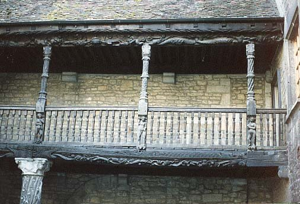
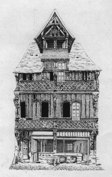
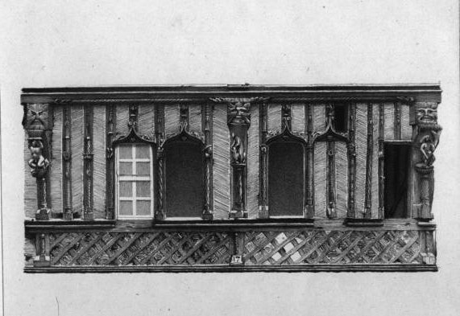
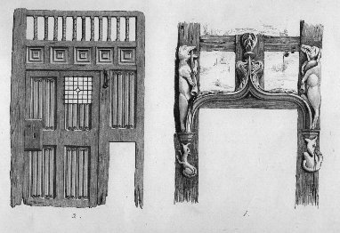
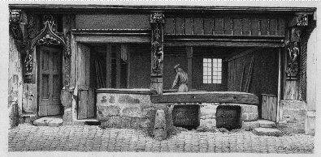
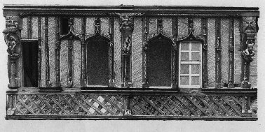
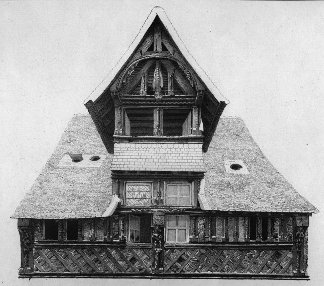
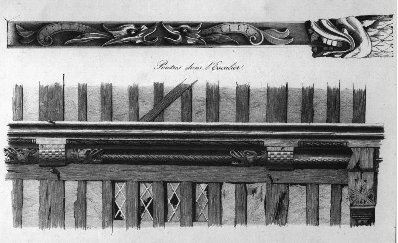
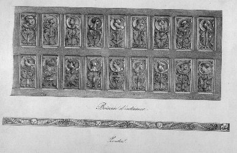
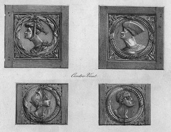
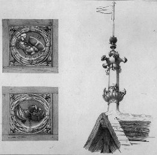
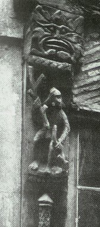
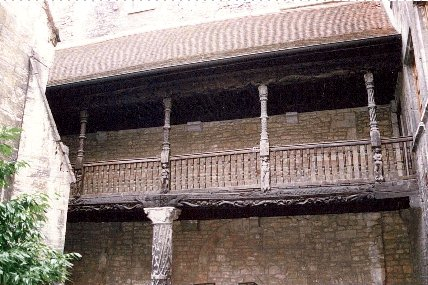
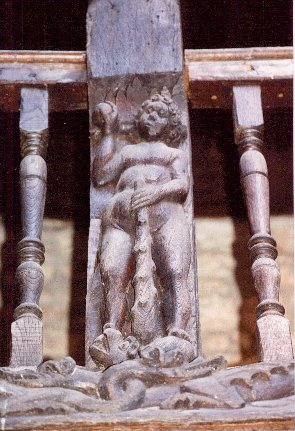
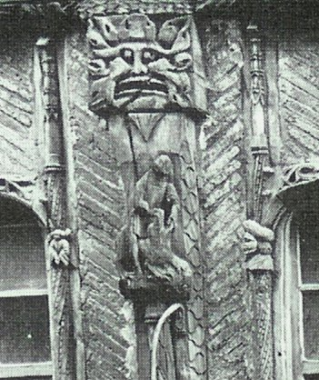
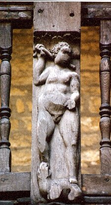
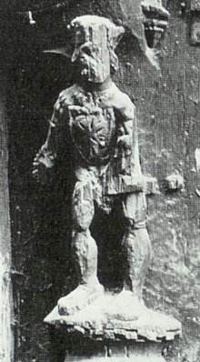
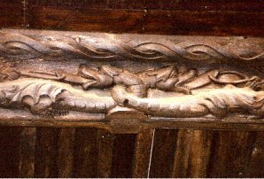
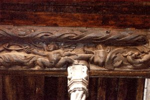
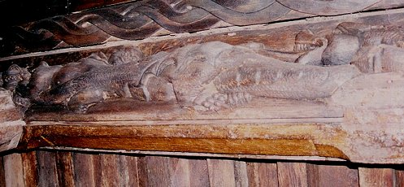
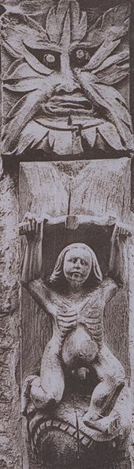
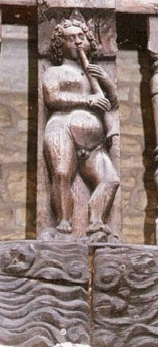
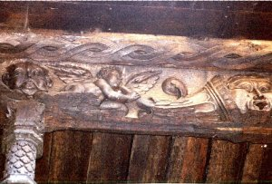
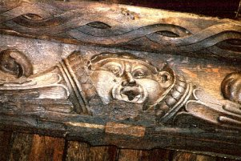
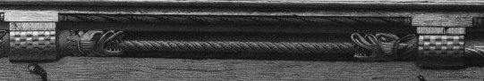
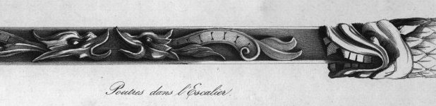
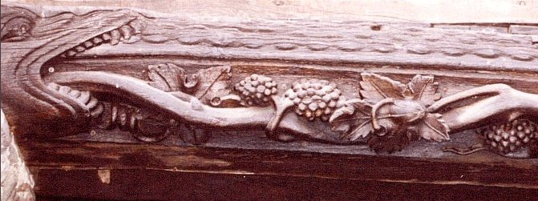
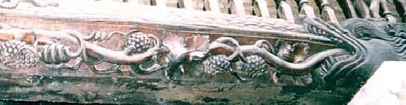
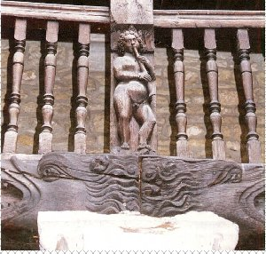
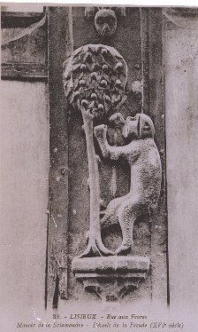
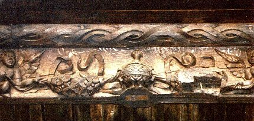
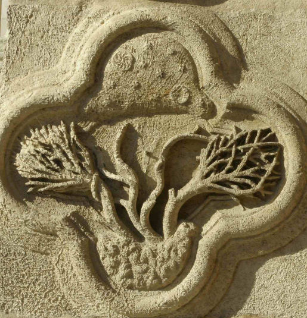
Noms cités
Fulcanelli · Paris · Jean · Venus · Atalanta · Jupiter · Canseliet · Philalèthe · Artephius · Roger · Maier · France · Christ · Apollon